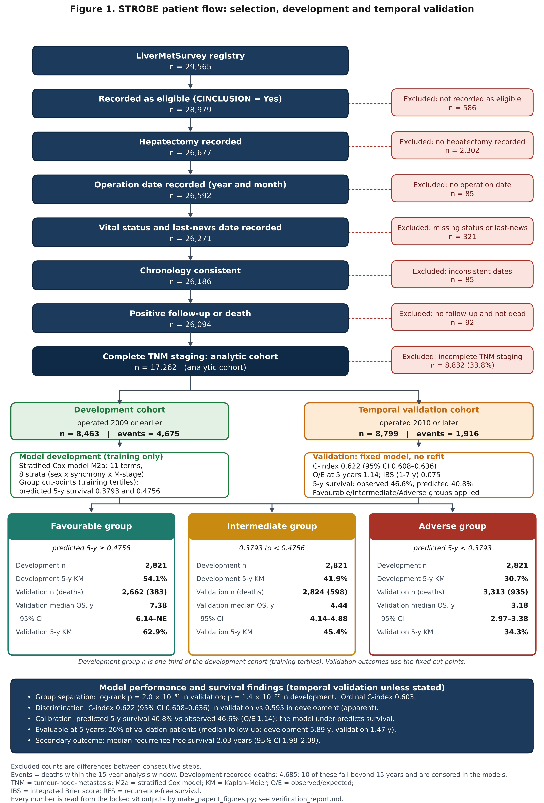
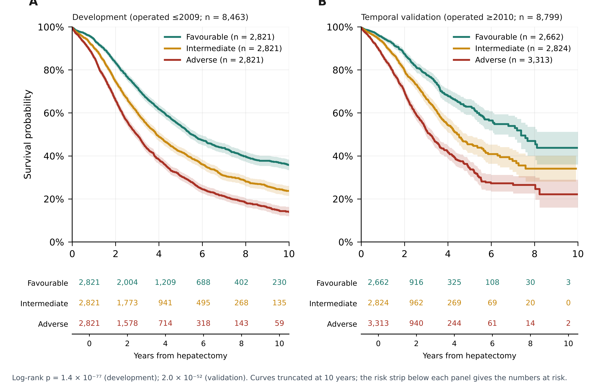
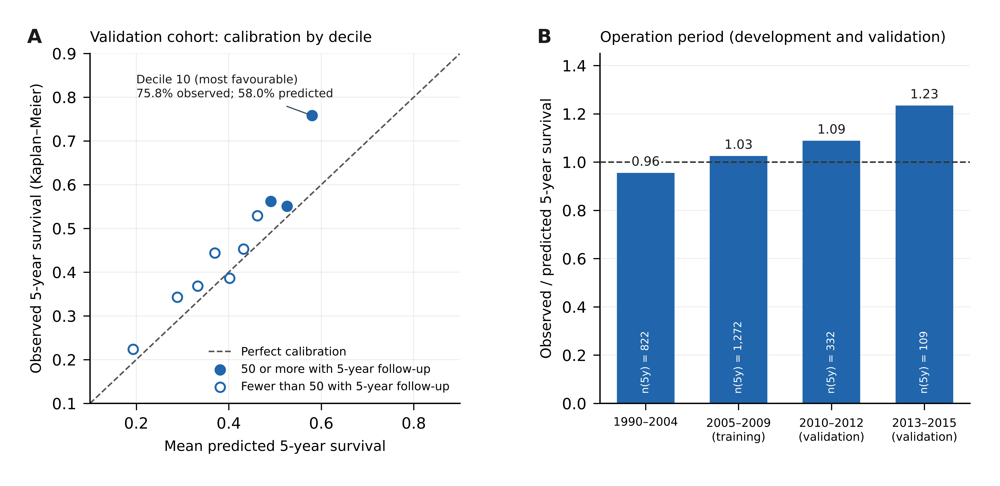

1School of Architecture, Computing and Engineering, University of East London, London E16 2RD, United Kingdom. 2NHS Grampian, Department of General Surgery, Aberdeen Royal Infirmary, Aberdeen AB25 2ZA, United Kingdom. 3East Lancashire Hospitals NHS Trust, Department of Hepatopancreaticobiliary Surgery, Burnley, Lancashire, United Kingdom. 4Centre Hépato-Biliaire, AP-HP Hôpital Universitaire Paul Brousse, Université Paris-Saclay, Villejuif, France.
Background: Colorectal liver metastases (CRLM) are a major cause of colorectal cancer death. Established prognostic scores were mostly derived from older, single-centre cohorts, and their performance in contemporary practice is uncertain.
Methods: Retrospective analysis of the LiverMetSurvey registry. The analytic cohort comprised 17,262 patients undergoing hepatectomy with complete TNM staging, divided by operation year into a development cohort (≤2009; n = 8,463) and a temporal validation cohort (≥2010; n = 8,799). A stratified Cox model (strata: sex, synchronous presentation and M-stage) used TNM stage, age, interval to liver metastasis, and number and size of metastases. Three prognostic groups were defined by training-era tertiles of predicted 5-year survival and applied unchanged to validation patients.
Results: Validation median overall survival was 7.38, 4.44 and 3.18 years in the Favourable (n = 2,662), Intermediate (n = 2,824) and Adverse (n = 3,313) groups (log-rank p = 2 × 10⁻⁵²). The C-index was 0.622 (95% CI 0.608–0.636). Predicted 5-year survival was 40.8% against 46.6% observed. Without TNM stage the C-index was 0.599 in the same patients.
Conclusions: A stratified Cox model using routinely recorded variables separated three prognostic groups that remained distinct in temporal validation. Discrimination was modest and survival was under-predicted in recent patients, so absolute predictions need recalibration before clinical use.
Keywords: colorectal liver metastases; prognostic model; survival analysis; temporal validation; calibration
Hepatic resection offers the main chance of long-term survival in colorectal liver metastases, but outcomes vary widely and are hard to predict for individual patients.
The Fong Clinical Risk Score, derived from 1,001 consecutive resections at a single centre, is the most widely used benchmark [1]. It counts five preoperative criteria and predates contemporary systemic therapy. The GAME score adds KRAS status to clinicopathological variables [2]. A 2026 systematic review and meta-analysis of liver-resection prognostic scores reported limited performance and heterogeneous reporting [3]. In a nationwide Dutch cohort, the Fong score had a C-index of 0.577 and GAME 0.596 [4].
Many models report discrimination without calibration, so absolute predictions cannot be checked. Few have been validated in a later cohort using a model fixed before validation. We therefore aimed to (1) develop a stratified Cox survival model from routinely recorded variables; (2) derive three prognostic groups from training-era predicted 5-year survival and apply them unchanged to later patients; (3) assess discrimination, calibration and separation in temporal validation; and (4) test the findings against date conventions, duplicate records, the omission of metastasis count and size, and a model without TNM stage. We follow the TRIPOD+AI statement [5] and assess risk of bias with PROBAST+AI [6].
This was a retrospective cohort study of the LiverMetSurvey registry, a prospectively maintained web-based database of patients with colorectal liver metastases. The study followed STROBE [7] and TRIPOD+AI [5]. The completed checklist is provided in Supplementary Material S9. Source workbooks were checksummed (SHA-256); the analysis ran from a single scripted notebook.
Eligibility required a recorded hepatectomy, an operation year and month, a vital status with a last-news date on or after operation, and either positive follow-up or death. Of 29,565 registry records, 26,094 met these criteria. Of these, 8,832 (33.8%) had incomplete TNM staging and were excluded, leaving 17,262 patients (Figure 1). Missing components were recorded as “not determined” (ND) or blank; their patterns and the characteristics of excluded patients are in Supplementary Tables S1–S2.
Partial operation dates were set to the 15th of the month (first and last day as sensitivity analyses).
Registry description. The original manuscript described the registry as spanning 63 countries and 242 contributing centres. The analysis extract contains 54 country codes and 288 site codes, of which 259 sites contain eligible patients. The reconciliation with the registry coordinators is outstanding; the figures reported here are the extract’s.
The primary outcome was overall survival from hepatectomy to death from any cause or to the last-news date, with follow-up capped at 15 years. No deaths in the analytic cohort occurred after 4 July 2020. Recurrence-free survival (RFS) was a secondary outcome: time to the earliest dated recurrence after operation, or to death. Undated recurrences were censored in the primary analysis and handled by three alternative rules.
Candidate predictors were TNM stage (T1–2, T3, T4; N0, N1, N2; M0, M1; AJCC categories [8] with subcategories collapsed), age at operation (per 10 years), sex, synchronous presentation, interval from primary diagnosis to liver metastasis (per 12 months; 0 for synchronous; missing when the date was unknown, negative or after operation), number of liver metastases (per additional lesion) and largest recorded metastasis (per 10 mm). For interval, count and size, a missingness indicator was added for each variable, and missing values were replaced by the development-cohort median (single median imputation). This is the only imputation in the primary model. Age, sex and synchrony, when missing, were replaced by the same development-cohort median without an indicator. Multiple imputation was used only in the CEA sensitivity analysis.
Time origin, predictor timing and prediction time. (1) Survival time origin: hepatectomy (operation date). (2) Predictor measurement time: not confirmed. Metastasis count and size are in the registry’s LE1 liver-metastasis block, and no documentation states when they were measured relative to preoperative chemotherapy or pathological examination; the source of TNM stage (clinical or pathological) is also unconfirmed. Pre-operative and resected counts agreed for 62% of the 14,189 patients with both recorded (Supplementary Table S2f), which does not establish measurement time. (3) Intended clinical prediction time: not yet fully established (Limitation 4).
The registry has no patient-level identifier. Records were screened for duplicates on all analysis columns together with country, site and patient number. Twenty-three identical-content pairs (46 records) were found, of which 16 met a probable-duplicate rule (shared birth and operation dates, at least 20 non-blank fields). All records were retained in the primary analysis. Probable duplicates and a broader rule (later records sharing birth date, operation date and sex) were removed only in sensitivity analyses (Supplementary Table S3). Nothing was permanently removed, pending registry confirmation.
Other sensitivity analyses (Supplementary Table S5) covered date conventions, same-day deaths, a model without metastasis count and size, a model without TNM stage, CEA, RFS handling rules and recalibration from 2005–2009 patients.
Patients operated in 2009 or earlier formed the development cohort, and those operated in 2010 or later the temporal validation cohort. Validation data were used only to evaluate fixed models, cut-points and rules. No model was selected on the basis of its validation C-index.
Three candidate models were compared on identical patients (Supplementary Table S4): M1, stratified by sex and synchrony with M-stage as a covariate; M2a, stratified by sex, synchrony and M-stage; and M2b, as M1 with a time-varying M-stage effect split at 2 years. Before validation results were used, a rule was fixed: choose the simplest candidate whose Schoenfeld tests [9] for all constant terms give p > 0.05. M1 failed for M-stage (p = 0.031). M2a passed for all terms (smallest p = 0.18) and was selected. The time-varying M-stage effect in M2b was not significant (p = 0.21). The baseline hazard was estimated by a piecewise Breslow method [10] from training patients only.
The development cohort contains 4,675 deaths, which is ample for the 11 candidate terms in the selected model.
Groups were defined by predicted 5-year survival, with cut-points at the training tertiles and applied unchanged to validation: Favourable ≥0.4756; Intermediate 0.3793 to <0.4756; Adverse <0.3793. Each group contains one third of the development cohort (n = 2,821). Separation was assessed by log-rank test. Stability of assignment was assessed by 100 bootstrap refits, comparing assignments with Cohen’s κ.
Harrell’s C-index [11] was computed in each cohort, with 300-resample bootstrap intervals in validation. Time-dependent AUC and Brier scores were computed at 1, 3 and 5 years, and the integrated Brier score over 1–7 years [12]. Brier scores were inverse-probability-of-censoring weighted [12], with the censoring distribution estimated from training patients only. The time-dependent AUC at each horizon used the 5-year cumulative hazard as the risk score. Calibration was assessed by comparing mean predicted survival with Kaplan–Meier survival at each horizon (observed/expected ratio with bootstrap intervals), by a calibration slope, by validation decile and by operation period. Estimates with fewer than 50 patients followed up to 5 years were flagged as sparse.
Survival was estimated by Kaplan–Meier and Cox methods, which account for patients alive at last contact. Median follow-up by reverse Kaplan–Meier was 5.89 years (development) and 1.47 years (validation). Because validation follow-up is short, the number of patients evaluable at each horizon falls (Table 4).
The Fong score [1] and a Nordlinger-type score [13] were computed on identical patients. The Fong subset had CEA recorded; the Nordlinger-type subset had age, T, N and interval data. The Fong score was computed from its five published criteria (node-positive, disease-free interval <12 months, more than one tumour, CEA >200 ng/mL, largest tumour >5 cm). The Nordlinger-type score is an approximation built from four registry variables (age ≥60, T4, node-positive, interval <12 months) and is not the published model. GAME [2] was not reproduced because KRAS status is recorded for 2.3% of patients. The Tumour Burden Score was not reproduced because its published cut-offs differ between studies and the registry’s size variable is the largest recorded lesion rather than a validated maximum diameter.
Analyses used pandas 2.3.3, NumPy 2.5.3, lifelines 0.30.3, scikit-survival 0.28.0, scikit-learn 1.9.1, pyarrow 26.0.0 and python-calamine 0.8.3 on Python 3.13.16, with random seed 42. All 15 code cells ran without errors. The primary outputs reproduce the previously validated analysis on all ten checked quantities (Supplementary S7). Analysis code is available at https://github.com/FarrahAftab/LiverMets.
Of 29,565 registry records, 17,262 patients had eligible operations and complete TNM staging (Figure 1). The development cohort contained 8,463 patients (4,675 deaths) and the validation cohort 8,799 (1,916 deaths). Median age was 63.4 years (IQR 55.7–70.6), 61.8% were male and 57.8% had M1 disease. The validation cohort had more M1 disease and shorter follow-up (Table 1).

Figure 1. STROBE patient flow for the development and temporal validation of the prognostic model. Of 29,565 registry records, 28,979 were recorded as eligible and 17,262 patients met all criteria with complete TNM staging; 8,832 (33.8% of the 26,094 patients meeting criteria) were excluded for incomplete staging. Patients operated in 2009 or earlier formed the development cohort (n = 8,463; 4,675 events within 15 years) and those operated in 2010 or later the temporal validation cohort (n = 8,799; 1,916 events). The stratified Cox model (M2a; 11 terms; 8 strata) was fitted in development only and applied unchanged to validation. Prognostic groups were defined by training-era tertiles of predicted 5-year survival (cut-points 0.3793 and 0.4756). Median follow-up was 5.89 years in development and 1.47 years in validation.
| Characteristic | Total (n = 17,262) | Development (≤2009; n = 8,463) | Validation (≥2010; n = 8,799) |
|---|---|---|---|
| Patients | 17,262 | 8,463 | 8,799 |
| Age at operation, years, median (IQR) | 63.4 (55.7–70.6) | 62.9 (55.2–69.9) | 64.0 (56.2–71.4) |
| Male sex, n (%) | 10,676 (61.8) | 5,204 (61.5) | 5,472 (62.2) |
| T stage, n (%) | |||
| T1–2 | 491 (2.8) | 186 (2.2) | 305 (3.5) |
| T3 | 13,023 (75.4) | 6,592 (77.9) | 6,431 (73.1) |
| T4 | 3,748 (21.7) | 1,685 (19.9) | 2,063 (23.4) |
| N stage, n (%) | |||
| N0 | 5,709 (33.1) | 2,827 (33.4) | 2,882 (32.8) |
| N1 | 6,784 (39.3) | 3,337 (39.4) | 3,447 (39.2) |
| N2 | 4,769 (27.6) | 2,299 (27.2) | 2,470 (28.1) |
| M stage, n (%) | |||
| M0 | 7,277 (42.2) | 3,686 (43.6) | 3,591 (40.8) |
| M1 | 9,985 (57.8) | 4,777 (56.4) | 5,208 (59.2) |
| Synchronous presentation, n (%) | 10,015 (58.0) | 4,776 (56.4) | 5,239 (59.5) |
| Synchrony not recorded, n (%) | 198 (1.1) | 138 (1.6) | 60 (0.7) |
| Metachronous presentation, n (%) | 7,049 (40.8) | 3,549 (41.9) | 3,500 (39.8) |
| Interval primary to liver metastasis, months, median (IQR; metachronous only) | 16.0 (9.8–26.9) | 16.3 (10.1–27.5) | 15.8 (9.4–26.3) |
| Metachronous, interval unavailable (metastasis date unknown or after operation), n (%) | 3,941 (55.9) | 2,154 (60.7) | 1,787 (51.1) |
| Number of liver metastases, n (%) | |||
| 1 | 7,144 (41.4) | 3,626 (42.8) | 3,518 (40.0) |
| 2–3 | 5,332 (30.9) | 2,625 (31.0) | 2,707 (30.8) |
| >=4 | 3,535 (20.5) | 1,600 (18.9) | 1,935 (22.0) |
| Unknown | 1,251 (7.2) | 612 (7.2) | 639 (7.3) |
| Largest recorded metastasis, mm, median (IQR) | 30.0 (20.0–45.0) | 30.0 (20.0–48.0) | 29.0 (19.0–45.0) |
| Size missing, n (%) | 3,306 (19.2) | 1,344 (15.9) | 1,962 (22.3) |
| Pre-operative CEA recorded, n (%) | 11,364 (65.8) | 5,517 (65.2) | 5,847 (66.5) |
| Deaths recorded (PATSTATC = Deceased), n (%) | 6,601 (38.2) | 4,685 (55.4) | 1,916 (21.8) |
| Deaths inside the 15-year analysis window (events), n (%) | 6,591 (38.2) | 4,675 (55.2) | 1,916 (21.8) |
| Patients with follow-up beyond 15 years (censored; not deaths), n | 69 | 69 | 0 |
| Median follow-up, years (reverse Kaplan-Meier) | 3.16 | 5.89 | 1.47 |
| Median overall survival, years (KM, 95% CI not shown) | 4.15 | 3.97 | 4.50 |
Table 1. Baseline characteristics of the analytic cohort by development (operated ≤2009) and temporal validation (operated ≥2010) periods. Deaths are shown as recorded and as events inside the 15-year window.
Exclusion for incomplete staging fell from 69.7% of operations in 1990–1999 to 24.4% in 2015–2020. Excluded patients were less often synchronous, had larger recorded metastases (median 35 vs 30 mm) and were operated earlier (median year 2007 vs 2010) (Supplementary Tables S1 and S2). Their 5-year survival was lower in the development era and higher in validation (Supplementary Table S2). The excluded group’s pattern is hard to reconcile with missingness that depends only on recorded covariates; the direction of any selection bias cannot be determined from the registry.
The selected model’s coefficients are in Table 2 and as a forest plot in Supplementary Figure S2. In validation the C-index was 0.622 (95% CI 0.608–0.636; the candidate-model table gives 0.608–0.637 for the same model, because its bootstrap resamples were drawn separately; Supplementary Table S4a), against 0.622 for M1 and 0.622 for M2b. Time-dependent AUC was 0.639, 0.653 and 0.675 at 1, 3 and 5 years (Table 4). Discrimination is therefore modest. The model’s contribution lies mainly in risk stratification. Its survival estimates under-predict 5-year survival in validation (Figure 3) and should be treated as provisional until recalibrated.
| Term | β | HR | 95% CI | p |
|---|---|---|---|---|
| T3 vs T1–2 | 0.1173 | 1.124 | 0.908–1.393 | 0.283 |
| T4 vs T1–2 | 0.3101 | 1.364 | 1.093–1.701 | 0.006 |
| N1 vs N0 | 0.2486 | 1.282 | 1.195–1.376 | <0.001 |
| N2 vs N0 | 0.4858 | 1.625 | 1.505–1.755 | <0.001 |
| Age, per 10 years | 0.1234 | 1.131 | 1.098–1.166 | <0.001 |
| Interval primary to liver metastasis, per 12 months (0 if synchronous) | -0.0183 | 0.982 | 0.939–1.027 | 0.420 |
| Number of liver metastases, per additional lesion | 0.0623 | 1.064 | 1.054–1.075 | <0.001 |
| Largest metastasis, per 10 mm | 0.0312 | 1.032 | 1.022–1.042 | <0.001 |
| Interval unavailable (indicator) | -0.0707 | 0.932 | 0.827–1.05 | 0.245 |
| Metastasis count unavailable (indicator) | 0.193 | 1.213 | 1.079–1.363 | 0.001 |
| Metastasis size unavailable (indicator) | -0.0165 | 0.984 | 0.904–1.07 | 0.703 |
Table 2. Coefficients of the selected model (M2a), fitted on the development cohort. Hazard ratios are within strata defined by sex, synchrony and M-stage. Source: P1_model_coefficients.csv.
In M1 the M-stage term violated proportional hazards (p = 0.031). In M2a, which stratifies on M-stage, all constant terms satisfied the test (smallest p = 0.18). The time-varying M-stage model showed no significant change after 2 years (p = 0.21). The test was applied in the training cohort only; validation-cohort tests were not performed (Limitations).
The groups separated overall survival clearly in both cohorts (Table 3; Figure 2). In validation, median overall survival was 7.38 years (95% CI 6.14 to not estimable) in the Favourable group, 4.44 years (4.14–4.88) in the Intermediate group and 3.18 years (2.97–3.38) in the Adverse group. Five-year Kaplan–Meier survival was 62.9%, 45.4% and 34.3%. The log-rank p-value was 2 × 10⁻⁵² in validation and 1.4 × 10⁻⁷⁷ in development. The ordinal C-index in validation was 0.603, and bootstrap κ for assignment stability was 0.83 (95% range 0.78–0.89).
| Group | Development n | Validation n | Validation deaths | Validation median OS, years (95% CI) | Validation 5-y KM survival | Development 5-y KM survival | Validation mean predicted 5-y survival |
|---|---|---|---|---|---|---|---|
| Favourable | 2,821 | 2,662 | 383 | 7.38 (6.14–NE) | 62.9% | 54.1% | 53.2% |
| Intermediate | 2,821 | 2,824 | 598 | 4.44 (4.14–4.88) | 45.4% | 41.9% | 42.8% |
| Adverse | 2,821 | 3,313 | 935 | 3.18 (2.97–3.38) | 34.3% | 30.7% | 29.1% |
Table 3. Prognostic groups (M2a) with training-only cut-points and validation outcomes. Source: F06_phenotypes_counts_survival_calibration.csv.

Figure 2. Overall survival by prognostic group in the development cohort (A, n = 8,463) and the temporal validation cohort (B, n = 8,799). Kaplan–Meier curves with 95% confidence bands; numbers at risk below each panel. Cut-points 0.3793 and 0.4756 were set in development. Log-rank p = 1.4 × 10⁻⁷⁷ (A) and 2.0 × 10⁻⁵² (B). Follow-up is short in validation (median 1.47 years, reverse Kaplan–Meier; development 5.89 years), so validation curves beyond about 5 years rest on few patients.
Predicted 5-year survival was 40.8% against 46.6% observed (observed/expected 1.14, bootstrap interval 1.09–1.20; calibration slope 1.07). Under-prediction was small at 1 year (O/E 1.01) and grew at 3 years (1.09, interval 1.06–1.12) and 5 years (Table 4). Under-prediction was present in nine of ten validation deciles, most markedly in the most favourable decile (75.8% observed against 58.0% predicted; Figure 3A). By operation period, O/E was 0.96 for 1990–2004, 1.03 for 2005–2009 (training), 1.09 for 2010–2012 and 1.23 for 2013–2015 (Figure 3B). The 2013–2015 estimate rests on 109 patients with 5-year follow-up; 2016 onward cannot be assessed.

Figure 3. Calibration of the M2a model. (A) Validation cohort only (operated 2010 or later): mean predicted against observed 5-year survival by decile; open markers mark deciles with fewer than 50 patients followed up to 5 years. (B) Observed/predicted 5-year survival by operation period, comparing development (1990–2009) and validation (2010 onward) periods; values above 1.0 indicate under-prediction. All 4 plotted periods have at least 50 patients with 5-year follow-up; no grey bars. The 2016 onward period is omitted (no patient had 5-year follow-up).
Re-estimating the baseline hazard from 2005–2009 patients, with coefficients fixed, reduced the 5-year O/E to 1.12 and kept 92% of patients in their primary group (κ 0.88). The gap was reduced but not removed, so the primary model was not recalibrated.
| Horizon (years) | Evaluable n (%) | Deaths before horizon | Mean predicted survival | Observed KM survival (95% CI) | O/E (95% CI) | Time-dependent AUC | Brier score |
|---|---|---|---|---|---|---|---|
| 1 | 5,335 (60.6%) | 581 | 89.7% | 91.0% (90.3–91.7) | 1.01 (1.01–1.02) | 0.639 | 0.060 |
| 3 | 3,118 (35.4%) | 1,544 | 59.2% | 64.5% (63.0–66.1) | 1.09 (1.06–1.12) | 0.653 | 0.101 |
| 5 | 2,289 (26.0%) | 1,848 | 40.8% | 46.6% (44.4–48.7) | 1.14 (1.09–1.20) | 0.675 | 0.065 |
Table 4. Performance and calibration by horizon in the validation cohort (n = 8,799). Evaluable patients are those with follow-up to the horizon or an event before it. Brier scores are inverse-probability-of-censoring weighted; the 5-year value rests on the 26% of validation patients with 5-year follow-up and should be interpreted with caution. Sources: G01_horizon_feasibility_validation.csv, G03_calibration_precision_by_horizon.csv, F02b_selected_model_performance.csv.
The primary median RFS was 2.03 years (95% CI 1.98–2.09) for the whole analytic cohort (n = 16,677; the validation-only median is not reported in the locked outputs), with 39.3% and 27.6% recurrence-free at 3 and 5 years (Supplementary Figure S1). Alternative handling of undated recurrences gave medians of 1.93 years (undated recurrences treated as events at last contact), 1.69 years (mid-interval) and 1.84 years (undated recurrences excluded). In the cohort, 5,324 patients had a dated recurrence after operation, 585 had a recurrence dated before operation (excluded), and 1,676 had a recurrence recorded without a usable date; 41 recurrences dated after last contact were treated as undated.
Across all sensitivity analyses (Supplementary Table S5), the validation C-index remained between 0.621 and 0.623 for the date-convention, same-day-death and duplicate analyses. The first-day convention changed 0.3% of group assignments, and assigning same-day deaths half a day, one day or a quarter day gave identical groups. Of the 13 same-day deaths in the cohort, seven lacked an explicit death flag; excluding or censoring them changed group assignment for about 0.4% of patients. Removing probable duplicates left the C-index at 0.622 and reassigned 33 patients (0.2%); the broader removal reassigned 138 (0.8%) and gave 5-year survival of 46.7% (Supplementary Table S3).
On identical validation patients, the selected model had a C-index of 0.639 in the Fong subset (n = 3,642; 914 deaths), against 0.591 for the Fong score, and 0.630 in the Nordlinger-type subset (n = 6,137; 1,396 deaths), against 0.583 for the Nordlinger-type approximation (Supplementary Table S10; Supplementary Figure S3). These approximations indicate relative performance on this registry; they do not establish the published models’ performance.
Without metastasis count and size (model without these variables), the C-index fell to 0.591 (95% CI 0.573–0.606) in the M1 structure and 0.591 (0.575–0.604) in M2a (Supplementary Table S5). A model without TNM stage, using age, sex, synchrony, interval, count and size, gave 0.599 on the same 8,799 validation patients, a difference of 0.022 (95% CI 0.009–0.034) from the TNM model.
Among the 5,847 validation patients with CEA recorded, CEA was associated with mortality (hazard ratio 1.16 per log unit, 95% CI 1.13–1.19). Adding it raised the C-index from 0.628 to 0.648 (complete case) and from 0.622 to 0.637 (multiple imputation, 10 draws). CEA was missing for about one third of patients, so it was not in the primary model.
In this international registry, a stratified Cox model using TNM stage, age, interval to liver metastasis, and metastasis number and size separated three prognostic groups that remained distinct in temporal validation. Five-year survival was 62.9%, 45.4% and 34.3% in the Favourable, Intermediate and Adverse groups. Groups were fixed in training and assignment was stable on bootstrap refitting (κ 0.83).
Discrimination was modest (C-index 0.622). This should be read against the literature: a 2026 systematic review reported limited performance and heterogeneous reporting for liver-resection scores [3], and the nationwide Dutch validation found limited preoperative discrimination for the Fong score and GAME [4]. Our benchmark comparisons suggest better discrimination than registry approximations of the Fong and Nordlinger-type scores, but these are approximations and we do not claim superiority over published scores. GAME adds KRAS status and extrahepatic disease, which this registry does not record for most patients, so the two cannot be compared directly here. The model’s contribution is therefore stratification with predicted survival at 1, 3 and 5 years, from routinely recorded variables, fixed before validation, with its calibration limits reported.
The model under-predicted survival in validation, most clearly at 5 years. This suggests the baseline hazard does not fully capture the longer-term outcomes of recent patients. Recalibration on contemporary data is needed before absolute estimates are quoted. Only 26% of validation patients could be evaluated at 5 years, so 1- and 3-year results are reported alongside.
Patients with incomplete staging (33.8% of eligible patients) differed in period, centre, synchrony and metastasis size, and their outcomes departed from a no-TNM model in opposite directions in the two eras. The analytic cohort is therefore the population in which TNM-based prediction is valid, not a representative sample of all resected patients.
An earlier analysis of this registry used binary classification and classification trees; the present survival model replaces it because it retains the timing and censoring of outcomes. A treatment-associated survival analysis is planned separately, because pre-operative chemotherapy must be defined by timing, the timing of metastasis count and size must be confirmed, and performance status, liver function and KRAS status must be available before any treatment comparison can be interpreted.
Taken together, these limitations mean that the findings do not establish external validity, strong discrimination, good calibration or readiness for clinical use.
In an international registry, a stratified Cox model using routinely recorded TNM, clinical and operative variables produced three prognostic groups with clearly different survival. The groups were fixed in training and remained distinct in temporal validation, with modest discrimination and a calibration gap that increases with horizon. The model’s value lies in transparent, survival-based stratification and explicit reporting of its limits. Absolute predictions require recalibration on contemporary data, and external validation is needed before clinical use.
Funding: No specific funding was received for this study.
Conflicts of Interest: The authors declare that they have no competing interests relevant to this work.
Author contributions (as recorded in the original draft; to be confirmed by all authors): F.A. conceived and designed the study, performed the statistical analyses, interpreted the data, and drafted the manuscript. M.A.G. supervised the study, contributed to the study design and interpretation of the findings, and critically revised the manuscript. M.B. provided clinical expertise, contributed to the interpretation of the clinical findings, and critically reviewed the manuscript. No contribution has been recorded for R. Adam. Final approval of the manuscript by all authors has not yet been confirmed.
Data Availability: The data were obtained from the LiverMetSurvey international registry. Access is governed by the LiverMetSurvey collaboration and is subject to institutional approval, data-sharing agreements and applicable ethical requirements. Requests should be directed to the registry coordinating centre. The analysis code is available at https://github.com/FarrahAftab/LiverMets.
Ethics approval and consent: This is a secondary analysis of anonymised registry data. Whether ethics approval or an exemption was obtained, its reference number, and the basis for waiving individual consent have not been confirmed by the authors. The study must not be described as approved until these are established.